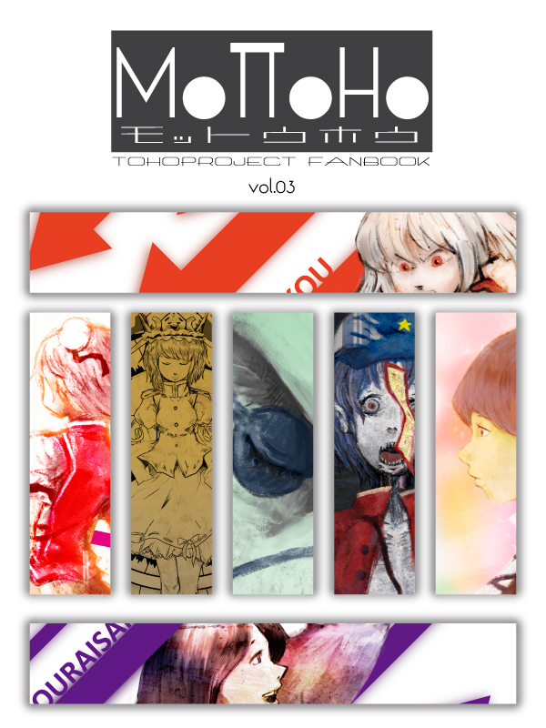
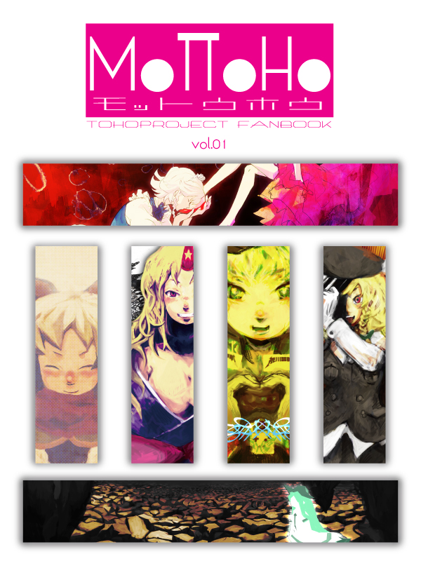

yamanoku's solo sircle / 2011/5~
ここはyamanokuが個人活動しているサークル
「MAJIGIRE」のメインサイトです
未定
決定次第記載していきます。
2011/12 コミックマーケット81
2011/11 再起動展 展示
2011/5 博麗神社例大祭8

tumblr開設しました
お気に召したらfollow & reblog

「もっと、東方を。東方を、もっと。」
そんな思いを込めたフルカラーイラスト集

MoTToHo vol.03
"Life is Beautiful"
2011/12 コミックマーケット81
登場キャラクター
- 聖白蓮
- 宮古芳香
- 茨木華扇
- 藤原妹紅
- 蓬莱山輝夜
- 四季映姫・ヤマザナドゥ
- 古明地こいし
生きるための「命」をテーマとした
それに由来、関連するキャラクターシリーズ

MoTToHo vol.02
"Green Image"
2011/11 再起動展
登場キャラクター
- 風見幽香
- 魂魄妖夢
- リグル・ナイトバグ
- 水橋パルスィ
- 封獣ぬえ
- 東風谷早苗
- 古明地こいし
「碧」をテーマカラーに設定した
それに由来、関連するキャラクターシリーズ

MoTToHo vol.01
"Nice to meet you !"
2011/05 博麗神社例大祭８
登場キャラクター
- ナズーリン
- 星熊勇儀
- 霧雨魔理沙
- 比那名居天子
- レミリア・スカーレット
- 十六夜咲夜
- 古明地こいし
サークルMAJIGIREにおける初の同人作品
「はじめまして」を込めて
寄稿ゲスト：にしお / < HP >
Copyright © MAJIGIRE. All Rights Reserved.